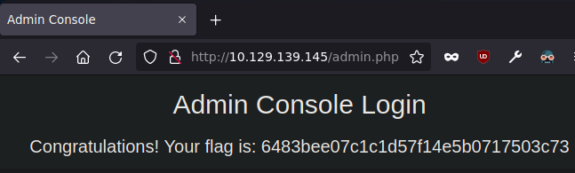

Resolución de la máquina Preignition de la plataforma de HackTheBox
Iniciamos escaneando los puertos de la máquina con nmap, con -sV para ver versiones
❯ nmap -sV 10.129.139.145
Nmap scan report for 10.129.139.145
PORT STATE SERVICE VERSION
80/tcp open http nginx 1.14.2
Existe un servicio web asi que damos un vistazo pero solo es la plantilla por defecto de nginx
Con gobuster haremos fuzzing buscando directorios y posibles archivos con extensión php
❯ gobuster dir -u 10.129.139.145 -w /usr/share/seclists/Discovery/Web-Content/raft-medium-directories.txt -x php -t 100
===============================================================
[+] Url: http://10.129.139.145
[+] Threads: 100
[+] Wordlist: /usr/share/seclists/Discovery/Web-Content/raft-medium-directories.txt
[+] Extensions: php
===============================================================
Starting gobuster in directory enumeration mode
===============================================================
/admin.php (Status: 200) [Size: 999]
En /admin.php podemos ver un login podemos probar credenciales por defecto (admin:admin)
Con esas credenciales nos loguea y nos muestra la flag

Vamos con las preguntas que nos pide la web de htb para pwnear la máquina
Directory Brute-forcing is a technique used to check a lot of paths on a web server to find hidden pages. Which is another name for this? (i) Local File Inclusion, (ii) dir busting, (iii) hash cracking.
- dir busting
What switch do we use for nmap's scan to specify that we want to perform version detection
- -sV
What does Nmap report is the service identified as running on port 80/tcp?
- http
What server name and version of service is running on port 80/tcp?
- nginx 1.14.2
What switch do we use to specify to Gobuster we want to perform dir busting specifically?
- dir
When using gobuster to dir bust, what switch do we add to make sure it finds PHP pages?
- -x php
What page is found during our dir busting activities?
- admin.php
What is the HTTP status code reported by Gobuster for the discovered page?
- 200
Submit root flag
- 6483bee07c1c1d57f14e5b0717503c73